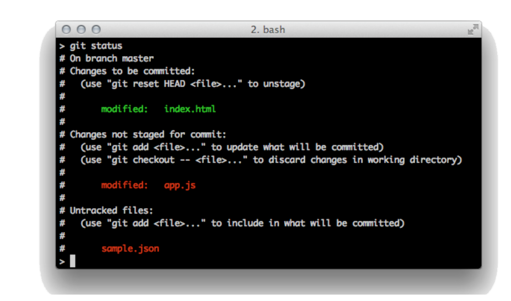
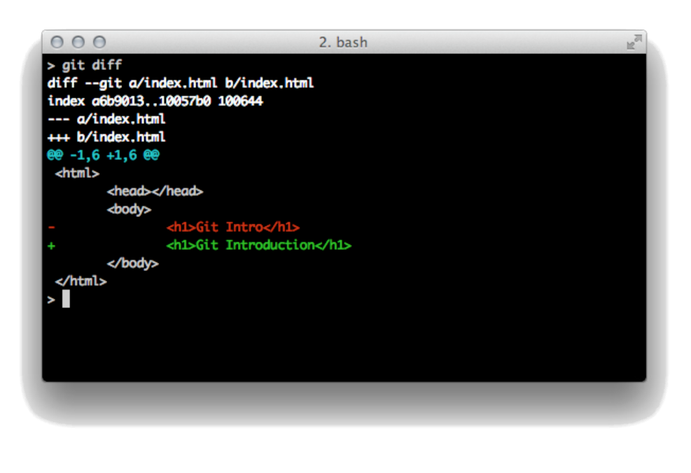
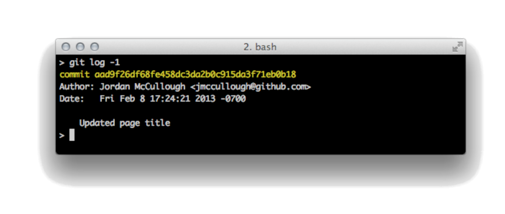
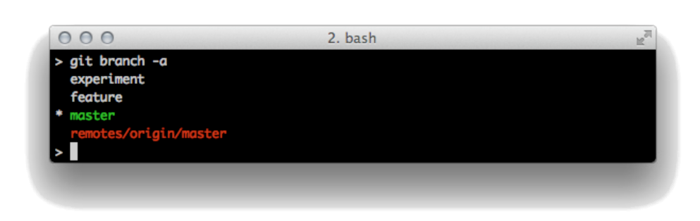
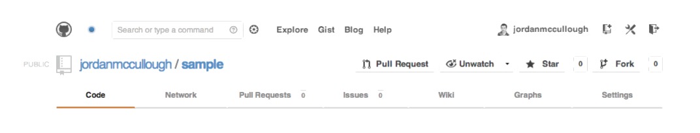
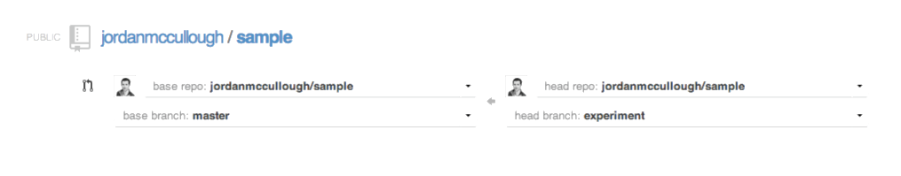
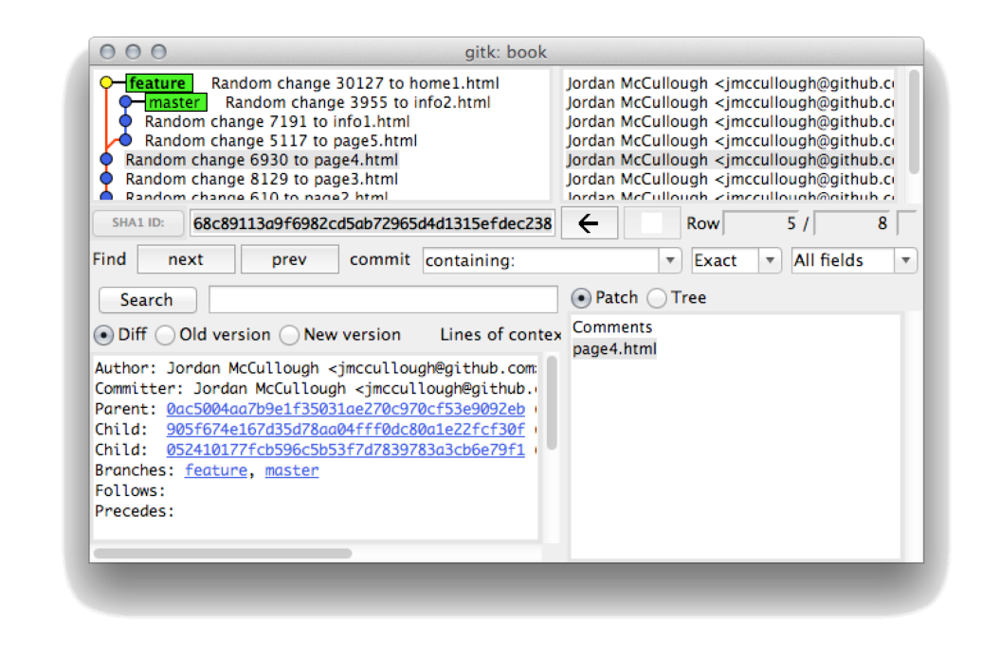

| Getting Started with Git | |
| By: Jordan McCullough |
WHY GET GIT?
Since its inception in 2005, Git continues to grow as the de facto standard for version control in both local and distributed environments. With its beginnings rooted in the open source community, and Linus Torvald's original authorship, Git's many features encompass social-driven collaboration that exceeds that of other version control systems.
Git is supported across common platforms and provides a wide-range of uses, from simple change-tracking to sophisticated collaboration, which are features attainable for every level of user and objective.
DISTRIBUTED VERSION CONTROL
What sets Git apart from more traditional, centralized version controls systems is its work-local, commit-often, publish-when-you-can methodology. With no requirement for a server, Git is liberated from any network, always retains full history on the user's machine, and can quickly be setup to publish and act as a Distributed Version Control System (DVCS).
The simplicity of creating a new Git repository, tracking history, and sharing via a service such as GitHub paves the way for limitless content version control.
GETTING STARTED
Installing Git
Git has a light footprint. For most platforms, you can copy the binaries to a folder on the executable search $PATH. Git is primarily written in C, which means there is a unique distribution or installer for each supported platform.
Check the version using the following command to verify that Git is installed and successfully operational:
git --version
Hot
|
The canonical (and official) reference for Git installers can be found at http://git-scm.com/download |
Establishing User Identity
Once you have a distribution of Git installed for your platform, identify yourself with a username and email address. This is strictly to credit your efforts on commits and should be done for each machine on which you'll be using Git.
git config --global user.name "Jordan McCullough"
git config --global user.email "jmccullough@github.com"
git config --global color.ui "auto"
Hot
|
Git does not directly support repository authentication or authorization. It delegates this by way of the protocol (SSH or HTTPS) or operating system (file system permissions) serving the repository. |
These commands store your preferences in a file named .gitconfig inside your home directory (~ on UNIX and Mac, and %USERPROFILE% on Windows).
GITHUB
With the advent of Git as the industry-standard DVCS, a remarkable solution to maximizing its social nature arrived in the form of GitHub.com.
GitHub.com makes storing Git repositories and sharing code simple. Once published to GitHub, the process of sharing Git repositories, facilitating code review, and contributing content changes becomes simpler than ever.
Hot
|
GitHub promotes open source by providing free accounts for publicaccess repositories. Should a repository require private-only access, private account support is available for a nominal signup fee. Both account types are available at https://github.com/signup/ |
CREATING A REPO
A Git repo can be created locally and independent of any network connection, or via GitHub's user interface.
Locally
From a command prompt, change directories to an empty folder or an existing project directory that you want to put under version control. Then, initialize the directory as a Git repository by typing the following commands:
git init
git add .
git commit -m "The first commit"
The first command, init, builds a .git directory that contains all the metadata and repository history. Git uniquely stores everything in just a
single directory at the top of the project.
Next, the add command with the dot wildcard instructs Git to begin tracking all files within and beneath the current directory.
Lastly, the commit function creates the permanent history of all files, with the -m option supplying a message alongside the history marker.
Via GitHub
Once signed into GitHub, click the "Create a new" repo button to initialize a repository within your GitHub account. Supply the Repository name field, and click "Create repository".
Obtain the new GitHub repository locally by performing a clone of the path provided from the GitHub repo page.
git clone git@github.com:githubtrainer/hellogitworld.git
The clone command performs several subtasks under the hood. Thus, all GitHub files are copied to your local machine with all Git commit history.
Hot
|
Cloning from GitHub establishes a local repository that initially mirrors the one on GitHub. The new local repo will also be preconfigured with Git remote "bookmark" for synchronizing code between local and GitHub repositories. |
TYPCIAL LOCAL WORKFLOW
Editing
Once you've cloned or initialized a new Git project, begin changing files as needed for your current assignment. There is no locking of files or a traditional VCS checkout concept. Simply begin editing files in a progression toward a committable state.
Adding (Staging)
When new or modified files are ready for the next commit, they must first be staged with the add command. Files can be staged one by one, by folder name, or by wildcard pattern.
git add index.html
git add javascript/
git add *.js
The -i option activates interactive add mode, a step-by-step set of prompts that assist in preparing the staging area for the next commit.
git add -i
The -p option is a shortcut for activation of the patch sub-mode of the interactive prompt, which allows for precise pieces within a file to be selected for staging.
git add -p
Committing
Once all desired files are added and staged, a commit command transactionally saves the pending additions to the local repository. The default text $EDITOR will be opened for entry of the commit message.
git commit
To supply the commit message directly at the command prompt:
git commit -m "Your commit message"
If you made a mistake in the message for your last commit, you can edit the text (while leaving the changed file(s) untouched) with:
git commit --amend
Moving
If you need to move a file, Git can detect your manual relocation of the file and will show it as a pending "move." However, it is often more prudent to use the Git-specific command to relocate a file and track its new destination.
git mv originalfile.txt newsubdir/newfilename.txt
Removing
If you wish to expunge a file from the current state of the branch, simply tell Git to remove it. It will be put in a pending deletion state and can be confirmed and completed by the next commit.
git rm filetoremove.txt
Aborting
f you want to abort all current, uncommitted changes and restore all files to the last committed state, a reset with this specific option will accomplish this:
git reset --hard
Resetting with the --hard option recursively discards all currently uncommitted (unstaged or uncommitted staged) changes. Any files with changes will be overwritten to that of the last commit.
A more targeted means of restoring just one file's changes is to use the checkout command.
git checkout modifiedfile.txt
VIEWING
Daily work calls for strong support of viewing current and historical facts about your repository, often from different points of view. This includes the state of a current working directory, the changes made compared to past commit history, and commit history in its entirety.
Status
To check the current status of a project's local directories and files , such as modified, new, deleted, or untracked, invoke the following status command:
git status

Diff
Git offers a patch-style view of the difference between the currently edited and committed files. A diff compares the patches between any two points in history or changes.
git diff
git diff --staged
git diff HEAD

git diff outputs a comparison of changes in the uncommitted and unstaged file changes in the working directory to that in the staging area. Should the staging area be empty, the comparison passes through to the most recent commit.
git diff--staged compares any staged (added) files to the most recent commit.
Lastly, git diff HEAD is an efficient means of circumventing any comparison of working directory changes to staged ones and directly compared modified files to the most recent commit.
Log
The full list of changes since the initialization of the repository; since a certain date, or a limited set from the most recent commit, is right at your fingertips, even when disconnected from all networks:
git log
git log -3
git log --since=yesterday

Blame
When one is trying to discover why and when a certain line was added, cut to the chase and have Git annotate each line of a source file with the name and date it came into existence:
git blame <filename>
BRANCHING
Branching in Git appears much the same as it does in other version control systems, but the difference lies in the fact that Git branches can be targeted to exist only locally, or be shared with (pushed to) the rest of the team. The concept of inexpensive local branches increases the frequency in which developers use branching, thus opening it up to use for quick private experiments that may be discarded or merged onto a well-known branch depending on their success.
git branch <new branch name> <from branch>
git branch <new branch name>
Choosing a Branch
Checking out, or switching to, a branch is as simple as providing its name:
git checkout< branch name>
Local and remote git branches are checked out using the same command in a radical change of operation for users coming from other systems like Subversion. Remote branches are read-only until "tracked" and copied to a local branch. Local branches are where new work is performed and code is committed.
git branch <new branch name> <from branch>
git checkout <new branch name>
or alternatively, in a combined command:
git checkout -b <new branch name> <from branch>
Listing Branches
To list the complete set of current local and remote branches known to Git, use the following command::
git branch -a

The local branches typically have simple names like master and experiment. Local branches are shown in white by Git's default syntax highlighting. Remote branches are prefixed by "remotes" and are shown in red.
Merging
Like other popular version control systems, Git allows you to merge one or more branches into the current branch.
git merge <branch one>
git merge <branch one> <branch two>
If any conflicts are encountered, with Git, a notification message is displayed and the files are internally marked with >>>>>>>>> and <<<<<<<< around the conflicting portion of the file contents. Once these conflicts are manually resolved, issue a git add
Rebase
Rebasing is the rewinding of existing commits on a branch with the intent of moving the branch start point forward, then replaying the rewound commits. This allows developers to test their branch changes safely in isolation on their private branch just as if they were made on top of the mainline code, including any recent mainline bug fixes.
git rebase <source branch name>
git rebase <source branch name> <destination branch name>
COMMIT HASHES & SHORTHAND
Rather than a sequential revision ID, Git marks each commit with a SHA-1 hash that is unique to the user committing the changes, the folders containing changed files, and the modified files comprising the changeset. This allows commits to be made independent of any central coordinating server.
A full SHA-1 hash is 40 hex characters, such as
64de179becc3ed324daab72f7238df1404723672
To efficiently navigate the history of hashes, several symbolic shorthand notations can be used as listed in the table below. Additionally, any unique sub-portion of the hash can be used. Git will let you know when the characters supplied are not enough to be unique. In most cases, 4-5 characters are sufficient.
| Shorthand | Definition |
|---|---|
| HEAD | Last commit |
| HEAD^ | One commit ago |
| HEAD^^ | Two commits ago |
| HEAD~1 | One commit ago |
| HEAD~3 | Three commits ago |
Git shorthand can be used in combination with all Git commands that accept a specific commit or range of commits. Examples include:
git diff HEAD~3
git checkout HEAD^^ git merge RELEASE-1.0
ADVANCED COMMANDS
In addition to the core Git workflow, many additional commands offer both shortcuts and productivity improvements for day-to-day development tasks.
Stashing
Git offers a useful feature for those times when file modifications are in an incomplete state and not yet ready for a commit. To temporarily return to the last commit, yet retain any uncommited changes, using stash on modified files places all uncommitted changes onto a stack.
git stash
When you are ready to write the stashed changes back into the working copy of the files, simply pop them back off the stack.
git stash pop
Hot
|
Stashing will only set aside modified, tracked files. New, untracked files will remain in untouched and in the working directory. |
Tagging
Git provides tagging to mark a specific commit in your timeline of changes, and serve as a useful identifier in history. A tag can be created for any commit in history by passing the commit hash. If no commit hash is provided, the most recent commit (i.e. HEAD) will be used by default.
git tag <tag name>
git tag <tag name> <commithash>
To list all tags of the current Git repository:
git tag
THE REMOTE WORKFLOW
Working with remote repositories is one of the primary features of Git. You can push or pull, depending on your desired workflow with colleagues and based on the repository operating system file and protocol permissions. Git repositories are most typically shared via SSH, though a lightweight daemon is also provided.
Hot
|
Git repository sharing via the simple daemon is introduced at http:// www.kernel.org/pub/software/scm/git/docs/git-daemon.html Sharing over SSH and Gitosis is documented in the Git Community Book at http://book.git-scm.com/4_setting_up_a_private_repository.html |
Remotes
While full URLs to other repositories can be specified as a source or destination for the majority of Git commands, this quickly becomes unwieldy and a shorthand solution is called for. These bookmarks of other repository locations are called remotes.
The full addresses of your configured remotes can be viewed with:
git remote -v
If a local repository was cloned from another Git source, an "origin" remote will already be present in the list returned typing this command:
git remote -v
To add a new remote, type:
git remote add <remote name> <remote address>
Push
Pushing with Git is the transmission of local changes to a colleague or community repository with sufficiently open permissions to allow you to write to it.
git push <remote name> <branch name>
git push <remote name> <local branch name:remote branch name>
The push command performs a publishing action, and sends the Git commit history of one or more branches to an upstream Git repository. Pushed branched are then accessible to anyone with access to this remote Git repository.
Pull
The action of a Git pull consists of the combination of retrieving (fetching) a remote repository's contents and automatically merging the file changes and commit history into the current branch.
Fetch
An alternative to pulling content, which automatically merges inbound changes with your local history, is to retrieve the remote (upstream) changes and store the content conveniently in a cache for evaluation or selective merging.
git fetch <remotename>
git merge <remotename/branchname>
EXPLORING GITHUB
After successfully cloning, committing, and pushing change history to your upstream remote GitHub repository, you are ready to begin exploring the social coding features that uniquely set Git and GitHub apart from other distributed version control systems.
Forking a Repo
Whether to modify a teammate's work or an open source project, GitHub forking provides a full copy of a repository from the original and places it into your own account. This supplies full Git commit history, full read/write privileges, and means for modifying and contributing changes back to the original author.
Fork any accessible GitHub repository by clicking the "Fork" button atop the repository.

Hot
|
All forked repositories show the original repository name under the repository page heading. |
Pull Request
Repository forks always maintain an association with their original heritage, thus simplifying contributions back to the original code by means of a pull request. GitHub's pull requests permit forked repository owners to offer project changes, to the original repository authors by means of commit history.
To create a pull request, browse to the desired forked repository, choose a branch with the branch selector, and then click the "Pull Request" button.Dropdowns specifying the destination repository (parent repo) and branch, as well as the contributing repository (fork repo) and feature branch control the contents and destination of the request.
Hot
|
Pull Requests can be applied against the same repository, thus providing issue-tracking and traceability of merges for both the project owner and team members. |
The repository owner receiving the pull request will be notified of the inbound change and will have the option of merging, commenting, or closing the pull request. This allows the repo owner to manage and incorporate contributions.

GUIS
Standard Git distributions provide two user interfaces written in Tcl/Tk, which provides a quick means of making commits and reviewing history in a unified view.
Git Gui offers a panel by which to select files to add, review a list of staged changes, and complete the commit with a message.
git gui
Gitk offers a diagram visualization of the project's commit history and branching. They both assume that the current working directory is the repository you wish to inspect.
gitk --all

Hot
|
Git is incredibly powerful, but its openness can be scary for enterprise-level projects. To maximize code quality and minimize potentially harmful effects of DVCS, check out Refcard #179: Git Patterns and Anti-Patterns: Scaling from Workgroup to Enterprise (forthcoming). |
SUBVERSION & GIT
Git is a highly interoperable version control system, from its composition of small executables up through the ready-to-use read and write support to remote Subversion repositories, all while providing the majority of benefits of Git on the local copy of the repository.
Cloning
To retrieve a local working copy of a Subversion repository that uses the traditional structure (trunk, tags, branches) and convert it into a Git repository, use a syntax very similar to that for a traditional Git repository.
git svn clone --stdlayout <svn-repo-url>
Note the progress messages during the operation. Clones of large Subversion repositories may take hours to complete.
Pushing Git Commits to Subversion
Git commits can be pushed transactionally, one for one, to the cloned Subversion repository. When the Git commits are at good point for publishing to the Subversion repository, type:
git svn dcommit
Retrieving Subversion Changes
When changes are made in Subversion and it is necessary to bring the Git repository up-to-date with those changes, rebase to the latest state of the Subversion repo.
git svn rebase
Subversion on GitHub
For teams or individual users looking to make the move to hosting projects on GitHub, yet still maintaining a workflow with Subversion, the move is simple and easy.
All repositories on GitHub are fully compatible with SVN tools and operations, including the traditional layouts for trunk and branches.
To perform a traditional SVN checkout against a repository on GitHub use the following:
svn checkout https://github.com/<username>/<project>
Partial checkouts are also available with the typical SVN checkout operation and partial's path parameter:
svn checkout https://github.com/<username>/<project> <partial>
Hot
|
A GitHub-hosted repository supports mixed-VCS teams. The same repository interacting with SVN can also be cloned and pushed with Git. |
REFERENCES
Official Git Home Page
Installers, release notes, and documentation pages:
http://git-scm.org
GitHub
Sign Up, Help, & Social Coding Guides
https://github.com
https://github.com/signup/
https://help.github.com